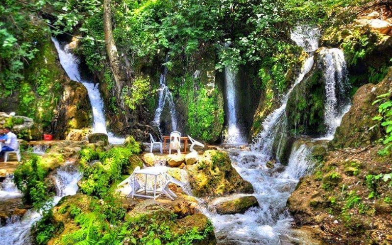

Hatay'ın simgesel noktalarından biri olan ve şehri gezen turistlerin alışveriş yapmak için ilk ziyaret ettiği yerler arasında bulunan Uzun Çarşı, yüzlerce yıldır Hatay'ın ticaretinin kalbinin attığı yerlerden. İpek Yolu üzerinde yer almasından dolayı tarihin her döneminde oldukça hareketli olan çarşı, 17. yüzyılda yapılan Kurşunlu Han’ın yüzlerce dükkanı için de sıkça ziyaret ediliyor. Hatay Uzun Çarşı’nın rengarenk tezgah ve dükkanlarında şifalı otlarından çeşit çeşit baharatlara, zeytinyağı ve defne ürünlerinden el yapımı süs eşyaları ve bakır ürünlerine kadar binlerce ürünü bir arada bulabilirsiniz. Bozulmamış otantik atmosferiyle geziler yapmak için de ideal olan Hatay Uzun Çarşı’da ünlü künefecilere de uğrayabilir, sevilen Hatay lezzetlerini tadabilir veya asırlık çınar ağaçları altındaki çay bahçelerinde mola vererek yorgunluk atabilirsiniz.
Hatay'ın her köşesi birbirinden güzel konaklarla çevrili ve Antakya’nın dar sokaklarını süsleyen tarihi evler, Hatay’ın en çok ziyaret edilen yapıları arasında. Yılın her mevsimi fotoğraf safarilerinin düzenlendiği, yöresel taş ve ahşap mimarili 350'ye yakın tarihi evin sıralandığı Antakya’daki bu büyüleyici evlerden bazıları yüzlerce yıldır hiç değişime uğramadan kalmış, bazıları ise restore edilmiş. Zenginler Mahallesi’nin yanı sıra Asi Nehri ile Habibi Neccar Tepesi arasında yer alan Kurtuluş Caddesi'nde de en güzel örneklerini görebileceğiniz eski Antakya evlerinin müze ve sanat galerisi olarak hizmet verenlerinde dönem mobilyaları ve antikalarla süslü iç bölümleri gezerek güzel fotoğraflar çekebilirsiniz.